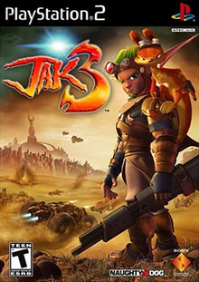
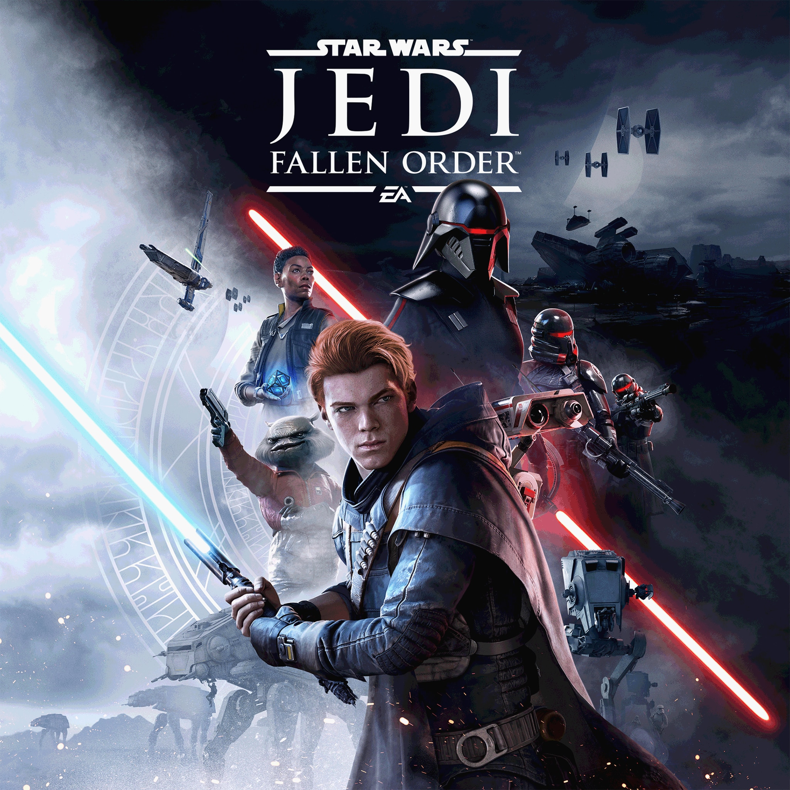
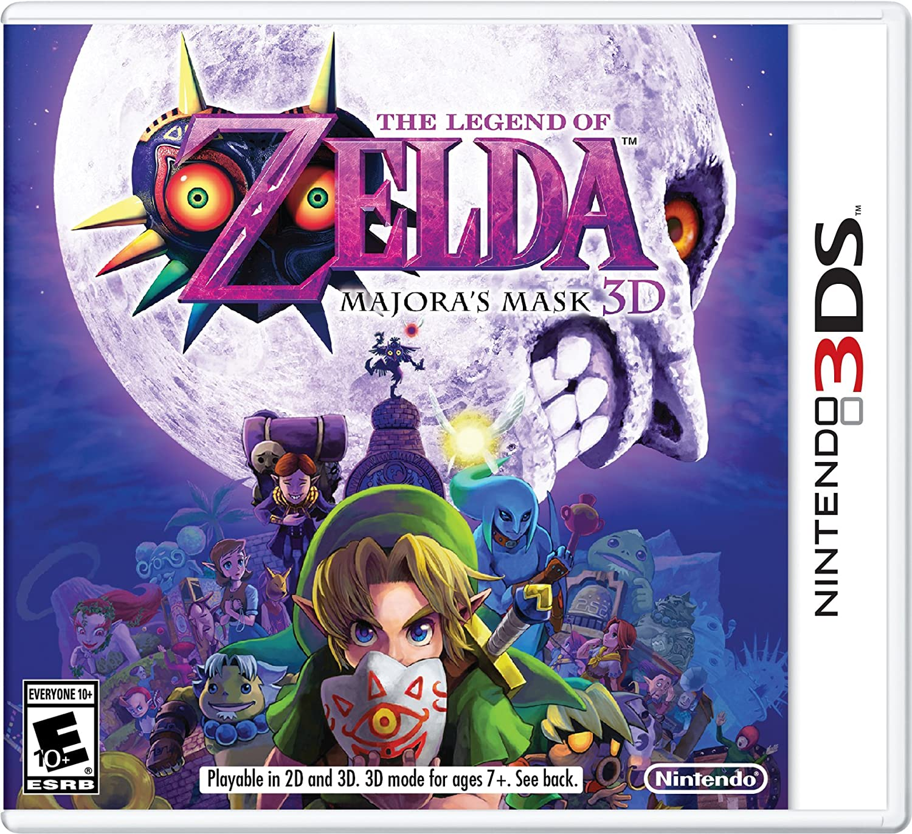
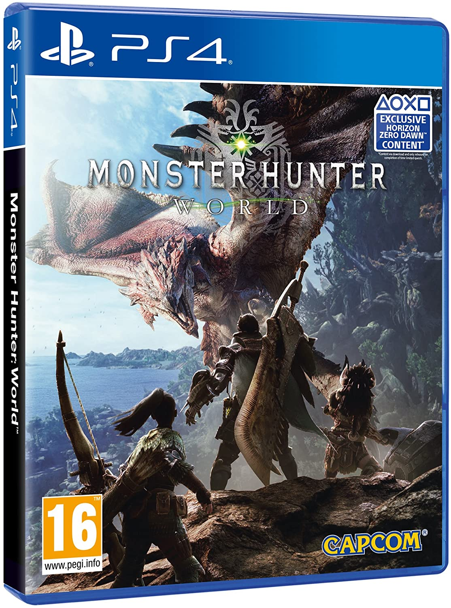
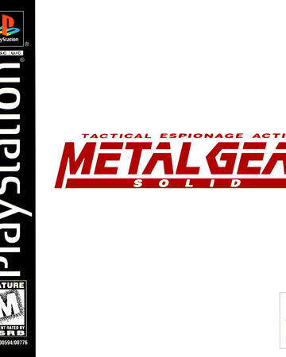

IMPORTANTE. Recuerda que esta pagina procesa el XML dinamicamente, por lo que si cambias de página y deseas volver, deberás importar el archivo nuevamente.

Super Mario 64
Valoración en MetaCritic: 94 ~ Valoración de los jugadores: 4.48/5 ~ Apto para: Desconocido
Género: Plataformas ~ Fecha de Lanzamiento: 1996-06-23 ~ Numero de copias vendidas: 70000000 ~ Precio: 49.99€ ~ Duración: PT13H
Plataformas: Nintendo 64
Es un videojuego de plataformas de mundo abierto para la videoconsola Nintendo 64, (aunque también hay una versión para Nintendo DS) desarrollado por Nintendo Entertainment Analysis and Development y publicado por la propia Nintendo. Su debut en Japón fue el 23 de junio de 1996, en América del Norte el 29 de septiembre de 1996 y en Europa el 1 de marzo de 1997. Junto con Pilotwings 64, fue uno de los títulos de lanzamiento para la consola. Como el juego principal del nuevo sistema de Nintendo, manejó las primeras ventas de la Nintendo 64, y ha llegado a vender más de 11 millones de copias en total, sin incluir las ventas de la Virtual Console de Wii y Wii U y su inclusión en el juego Super Mario 3D All Stars.
Haz click aquí para ver el Tráiler de lanzamiento- 
Jak 3
Valoración en MetaCritic: 84 ~ Valoración de los jugadores: 4.12/5 ~ Apto para: Mayores de 17 años
Género: Plataformas ~ Fecha de Lanzamiento: 2004-11-09 ~ Numero de copias vendidas: 27000000 ~ Precio: 29.99€ ~ Duración: PT40H
Plataformas: PlayStation 2, PlayStation 3, PlayStation 4, PlayStation Vita
Jak 3 es un videojuego de plataformas de acción-aventura desarrollado por Naughty Dog y distribuido por Sony Computer Entertainment. El título, precedido por Jak II, es el tercer juego de la serie Jak and Daxter. Fue lanzado en Norteamérica el 9 de noviembre de 2004 y en Europa el 26 de noviembre de 2004. La trama del juego comienza exactamente donde finalizó su antecesor; en la desierta Wasteland, allí, Jak descubre una ciudad fuera de las murallas de Haven, donde tendrá que sobrevivir y buscarse una nueva vida. El juego presenta una ambientación y mapa particularmente más extenso que el visto en Jak II, además de incluir nuevas armas, objetos y vehículos.
Haz click aquí para ver el Tráiler de lanzamiento - 
Star Wars Jedi Fallen Order
Valoración en MetaCritic: 80 ~ Valoración de los jugadores: 4.14/5 ~ Apto para: Mayores de 17 años
Género: Acción-aventura ~ Fecha de Lanzamiento: 2019-11-15 ~ Numero de copias vendidas: 10000000 ~ Precio: 69.99€ ~ Duración: PT16H
Plataformas: PC, PlayStation 4, Xbox One
Star Wars Jedi: Fallen Order (en español: Star Wars Jedi: La Orden caída) es un videojuego de acción y aventura para un solo jugador desarrollado por Respawn Entertainment y publicado por Electronic Arts, ambientado en el universo de Star Wars. La trama se sitúa entre el Episodio lll: La Venganza de los Sith y el Episodio lV: Una Nueva Esperanza. Fue anunciado durante el E3 2018 y se realizó una revelación más detallada en la celebración de Star Wars en abril de 2019. El juego fue lanzado el 15 de septiembre de 2019 para Microsoft Windows, PlayStation 4 y Xbox One.
Haz click aquí para ver el Tráiler de lanzamiento - 
The Legend of Zelda: Majora's Mask
Valoración en MetaCritic: 95 ~ Valoración de los jugadores: 4.34/5 ~ Apto para: Desconocido
Género: Acción-aventura ~ Fecha de Lanzamiento: 2000-04-27 ~ Numero de copias vendidas: 113000000 ~ Precio: 34.99€ ~ Duración: PT30H
Plataformas: Nintendo 64, Nintendo GameCube, Consola Virtual, Nintendo 3DS
The Legend of Zelda es un videojuego de acción-aventura de la serie The Legend of Zelda desarrollado por la división Entertainment Analysis and Development de Nintendo para la videoconsola Nintendo 64. Fue lanzado el 27 de abril de 2000 en Japón; el 26 de octubre de 2000 en Norteamérica; y el 17 de noviembre de 2000 en Europa. El título vendió aproximadamente 314.000 copias en Japón durante su primera semana, ha vendido 3.84 millones de copias en todo el mundo y ha cosechado críticas muy positivas. Fue relanzado para la Nintendo GameCube como parte del recopilatorio The Legend of Zelda: Collector's Edition y en el servicio Virtual Console de Wii el 3 de abril de 2009 en la región PAL, el 7 de abril en Japón y el 18 de mayo de 2009 en Norteamérica. Una adaptación para la Nintendo 3DS, titulado The Legend of Zelda: Majora's Mask 3D, fue lanzado el 13 de febrero de 2015.
Haz click aquí para ver el Tráiler de lanzamiento - 
Monster Hunter: World
Valoración en MetaCritic: 89 ~ Valoración de los jugadores: 4.06/5 ~ Apto para: Mayores de 17 años
Género: Action-Role ~ Fecha de Lanzamiento: 2017-12-22 ~ Numero de copias vendidas: 6000000 ~ Precio: 44.99€ ~ Duración: PT45H
Plataformas: PlayStation 4, Xbox One, Microsoft Windows
Monster Hunter es una serie de RPGs de acción que te pone en la piel de un cazador de gigantescos monstruos a los que te enfrentarás en majestuosos escenarios de gran riqueza. Tu tarea es aceptar misiones de caza de monstruos en una gran variedad de hábitats. Abátelos y recibe materiales que podrás utilizar para crear armas y armadura más poderosas con las que enfrentarte a monstruos aún más peligrosos. Monster Hunter: World es la última entrega de la serie. En ella podrás disfrutar de la mejor experiencia de juego, utilizando todos los recursos a tu alcance para acechar monstruos en un nuevo mundo rebosante de emociones y sorpresas.
Haz click aquí para ver el Tráiler de lanzamiento - 
Metal Gear Solid
Valoración en MetaCritic: 94 ~ Valoración de los jugadores: 4.45/5 ~ Apto para: Mayores de 18 años
Género: Acción-Aventura ~ Fecha de Lanzamiento: 1998-09-03 ~ Numero de copias vendidas: 6500000 ~ Precio: 39.99€ ~ Duración: PT12H
Plataformas: PlayStation, PlayStation Network, Game Boy Color
Metal Gear Solid sigue a Solid Snake, un soldado que se infiltra en una instalación de armas nucleares para neutralizar la amenaza terrorista de FOXHOUND, una unidad genéticamente mejorada de fuerzas especiales. Snake debe liberar a dos importantes rehenes, confrontar a los terroristas y evitar el lanzamiento de un ataque nuclear. Para ello, cuenta con un equipo de apoyo a distancia que le comunica vía códec información sobre la misión, comandada por el Coronel Roy Campbell, y complementada por personal médico, de análisis de datos, expertos en armas y en supervivencia.
Haz click aquí para ver el Tráiler de lanzamiento